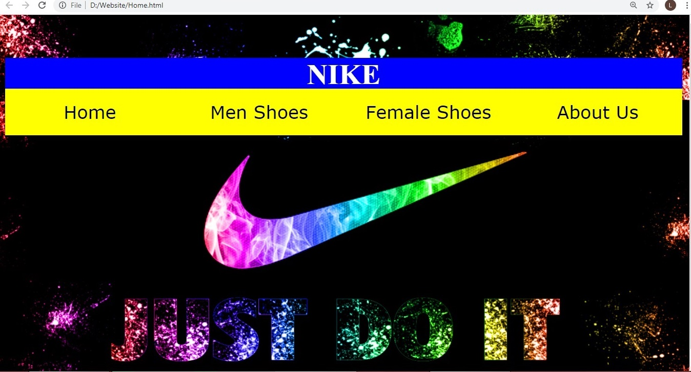

A Website I Design for new interface of Nike Store. I'm currently adding some new feature for this website. This
website I design is a friendly user for kids and adults through online to see easily the categories and
different design of shoes for men and women.

×
(Click to view photo)
Photo Gallery
Quiz Website
This Website is design for random gallery photos of an anime. This website contains a information of the characters
of Seven Deadly Sins Anime and what are their roles in this anime. This anime is also known as best anime among the
other anime, community has increased as fans anticipated another season for the anime.